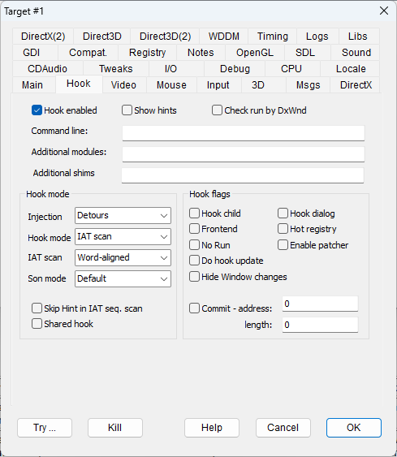
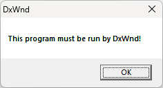

|
Hook enabled |
HOOKENABLED |
If this flag is not set, DxWnd ignores the task (see gray icon). It is useful to temporarily delete a task from the active task list without changing its configuration. |
|
Show hints |
SHOWHINTS |
This option activates message boxes that contain information about what DxWnd finds in a program's executable. It can't tell you exactly how to configure that program's hook, but can be helpful in determining which settings you may need to adjust. |
|
Check run by DxWnd |
RUNBYDXWND |
Checks if the program is run from the DxWnd interface. Some programs work correctly with the support of DxWnd only when activated with early hook modes (see "Early hook" flag in the "Main" tab) when run directly from the DxWnd interface. This flag adds an initial check to issue a warning message and stop the program execution if the program was started in a different way.  |
|
Command line |
DxWnd can run a controlled task from the GUI. When this happens (either by double-clicking on the task icon, or through the Run command or in any other way), DxWnd choses a void command line to be passed to the CreateProcess system call. This pleases most programs but not all of them. In certain cases, the task makes a check on the argument line and behaves differently, as for instance, many LucasArts games of the Star Wars series, that in turn run the setup frontend in the case of NULL command line. The string written in this edit box replaces the void argument list. It has to be noted that the first argument passed to the program is its pathname, so if you need to pass an argument you will have to specify two values. For instance, if you want to pass a /NOMOVIE argument to "game.exe", the box will have to be filled with "game.exe /NOMOVIE". If the first argument of the command line is meant to hold the full path or the filename of the executed program and this string contains spaces, you must put it inside double-quotes, for example, ["C:\strategy games\game 1.exe" -nosound] as per the standard Windows shortcut rules. Please be aware that in some cases, the programs expect these rules to be violated, such as when the program is checking for a conventional (and usually secret) password as the first argument in place of the ordinary task path. |
|
|
Additional modules: |
DxWnd's hooking logic may not notice some DLLs. In these fortunately rare cases, you can fix the issue by entering one or more module names to be added to DxWnd's search algorithm. |
|
|
Additional shims: |
Though not strictly a DxWnd functionality, this field gives the possibility to apply Microsoft shims layers by setting the corresponding string into the environment of the process being run. Multiple shims strings must be separated by spaces. This corresponds to the "set __compat_layer" method. Examples of valid strings: 16BitColor, 256Color, 640x480, etc. (check the Compatibility Modes in Microsoft Application Compatibility Toolkit for the full list). |
|
Window hook |
A Window hook mode (formerly known as SetWindowsHook) handles the injection by setting a callback (through SetWindowsHookExA) that intercepts the creation of the first program window. It is the default DxWnd hooking schema, allowing the program to run independently from the DxWnd interface, that is, entering in action also if the program is run from somewhere else, like from a shortcut or by double-clicking on the executable icon from the File Explorer. The drawback is that the window creation may happen after some action that required DxWnd hooking, so DxWnd will be unable to completely intercept the program's execution, resulting in some odd behaviors from the program. It should be noted that this method is always active, that is, also when a different method is selected, providing a sort of second-chance opportunity for the injection to take place successfully. |
|
|
Debugger |
STARTDEBUG |
This injection mode makes DxWnd behave like a debugger, with the advantage that the injection takes place from the very beginning of the target execution (early injection), allowing DxWnd to intercept all events. Another advantage is that, when DxWnd Debug mode is set, DxWnd will generate a full log of all the debugged activities including, for instance, all the debug messages. The drawback is that this only works when the task is activated from the DxWnd interface (indicated by a yellow icon; see The Interface). Another drawback is that the injection process closely resembles the activation of a debugger, which some games will detect and intercept, shutting down the program. A third drawback is the fact that you can't use two debuggers on the same target, so when this injection is active, the target program can't be attached to another debugger to inspect it. |
|
Inject DLL |
INJECTSUSPENDED |
This hook technique (formerly named "Inject suspended process") is similar to the "Debugger" mode above, it is an early injection method that intercepts the target operations from the beginning but does not involve debugging, allowing greater compatibility with some programs that might block that more complex method. |
|
Proxy DLL |
INJECTPROXY |
This hook technique is based on system library proxies. DxWnd will copy all the proxy DLL files from its proxy folder to the target program folder and will monitor the task execution so that each copied DLL will be automatically deleted at the end of the task execution. The proxies are instrumented with code that handles the concurrency between different DLL files, so loading more than one DLL will give no harm. In addition, the proxy DLL will take the target's configuration directly from the DxWnd shared memory table. This method is propedeutic to building and testing a standalone proxy configuration that may work without DxWnd frontend. The drawback of this technique is that the target could have no static links to any of the proxy DLLs and in this case, the injection will not take place, or maybe it will take place at a later time when one of the proxy DLLs is loaded dynamically. Another problem is the possibility that the target program may not select the proxy DLL in the local folder by setting a full pathname of the DLL. So, the "proxy DLL" mode is recommended to test a proxy setting, but it is not granted that it could work so good as other methods. |
|
Inject APC |
INJECTAPC |
This is an experimental APC (short for "Asynchronous Procedure Call") injection mode based on the scheduling of a remote asynchronous thread. It behaves in a way similar to the "Inject DLL" method, but uses the NtQueueApcThread of "ntdll.dll" to queue the hooking thread into the target process, so it currently has high chances to be detected as a threat and be stopped by the anti-virus program. It should be tried only when the other methods fail and, in this case, it may require the anti-virus activity to be stopped temporarily (not recommended). |
|
Detours |
STARTDETOURS |
This hook mode uses the Microsoft Detours injection ( https://github.com/microsoft/Detours ). The method is particularly powerful because it ensures that the injected code is executed as the first module before any other loaded module. |
|
IAT scan |
The default method. Procedure names are searched through the OFT pointers and, in case there are no pointers available, names are searched sequentially, assuming that they are null padded to be aligned to a word boundary (2 bytes). It works in most cases. BEWARE: This mode is incompatible with sos95nn.dll MIDI libraries and causes the game to crash. Better avoid this setting in case a SOS (Sound Operating System) library is linked or loaded. |
|
|
Mixed (former "Hot patch" flag) |
HOTPATCH |
The original DxWnd used IAT patching to redirect API calls to the altered routines. This method has its advantages, but fails when not all APIs are reached because they are located in unconnected DLLs, referenced by ordinal number or referenced by programs with obfuscated IAT. IAT obfuscation is a sophisticated but common enough technique to make a hacker's life harder: for instance, the game executable of Doom III has an obfuscated IAT. Checking this flag causes DxWnd to use two mixed patching techniques, using IAT scan for the less critical calls and using an alternate patching technique for the most critical ones that should never be missed. This alternate patching technique is named "hot patching" (a.k.a. "inline hooking") and creates a detour assembly code right at the beginning of the API implementation. Once done, every single call gets intercepted, no matter from where the call is made, but it isn't always possible to apply this technique. Luckily, in the vast majority of cases, they both work. |
|
Hot patch (former debug "Force hot patchng" flag) |
HOTPATCHALWAYS |
This flag forces the use of the "hot patching" technique for every system call. It should be used wisely, only in case that the other modes didn't work. This operation adds some overhead, so it is to be expected that the controlled task activation is delayed. |
|
Word-aligned (former "Word" flag) |
IATWORDALIGNED |
The default method. Procedure names are searched through the OFT pointers and, in case there are no pointers available, names are searched sequentially, assuming that they are null padded to be aligned to a word boundary (2 bytes). It works in most cases. BEWARE: This mode is incompatible with sos95nm.dll MIDI libraries and causes the game to crash. Better avoid this setting in case a SOS (Sound Operating System) library is linked or loaded. |
|
Byte-aligned (former "Byte" flag) |
IATBYTEALIGNED |
IAT, same as "Word" method, but navigation schema for IAT with no OFT indication assumes that names are aligned at byte boundary with no null padding. It works for instance on several old Sierra games. |
|
Scan EXE PE (former "PE browse" flag) |
PEFILEHOOK |
Scan method that retrieves information from the PE header on the target modules (executable file and loaded dynamic libraries) directly on the file system, accessing information before that it is overwritten by the loader. It is a very powerful method, working in almost all cases, but with some overhead due to the file access. |
|
No scan |
NOIATSCAN |
Avoid hooking scrambled IAT - fixes games of Sierra Hoyle series. |
|
Default |
By default, DxWnd does not intercept the CreateProcess call and therefore does not automatically hook the program's children. To hook the program's children, use Edit > Add (see Edit) to create a new entry in the main program list for each child process. |
|
|
Suppress |
SUPPRESSCHILD |
This option bypasses calls to CreateProcess. Some games start annoying programs as child processes, for instance to play intro movies (like binplayer.exe that may cause desktop configuration changes) or open advertising HTML links. You can skip these operations by activating this flag. |
|
Extend Debug |
DEBUGSON |
This option automatically hooks any created child processes with the "Debug" hook mode. |
|
Extend Injection |
INJECTSON |
This option automatically hooks any created child processes with the "Inject DLL" hook mode. |
|
Extend Detours |
DETOURSSON |
This option automatically hooks any created child processes with the "Detours" hook mode. |
|
Shared hook |
SHAREDHOOK |
This option extends the hook configuration of the father process to any of its son processes by dynamically replacing the new process pathname in place of the father process pathname. This is extremely useful whenever the process choses a dynamic and randomly generated pathname for the son process, making it impossible to pre-configure the son process in DxWnd. It also helps making DxWnd configurations very compact where a single entry can handle many executables in a father/son relationship. |
|
Skip Hint in IAT seq. scan |
SKIPIATHINT |
Fixes "The Black Mirror" hooking problems. |
|
Hook child WindowProc |
HOOKCHILDWIN |
By default, DxWnd intercepts the WindowProc routine of the main window, and this is enough for its purposes. In some cases though, this is not enough and this flag tells DxWnd to intercept and redirect the WindowProc routines of all child windows as well. |
|
Hook dialog WindowProc |
HOOKDLGWIN |
Same as above but for dialog windows. |
|
No Run |
HOOKNORUN |
Some applications run several executables. The only game found to run like this so far is "Die Hard Trilogy". It has a frontend program that runs one choice of three different executables, each one implementing one single, unique game. In this situation, each individual game needs an individual DxWnd configuration entry, and also needs to be run by the frontend. They cannot be run directly. The "No Run" flag and the corresponding blocking icon prevent the user from trying to run the game from the DxWnd interface. |
|
Do hook update |
HOOKDOUPDATE |
Under certain conditions, the same API or method call may have different memory addresses while the program is running. Unfortunately, there is no universal policy to handle this situation: in some cases, the program only works correctly if the function's original address is updated; in other cases, it is better to stick to the original values. By default, the original address is not updated. Check this flag to allow the update of the initial original address instead. |
|
Hide window changes |
HIDEWINDOWCHANGES |
When creating windows, by default, DxWnd can resize and alter the window characteristics (like the style) before the window creation. In some rare cases, this can interfere with the program logic that expects certain values for the window size, position and characteristics. This flag changes the default behavior in such a way that each window is first created with the original parameters, then, after the window initialization but before any other operation, its parameters are updated to become the new required values. This flag was necessary to scale the "Star Wars: Rebellion" game window without artifacts. |
|
Hot registry |
HOTREGISTRY |
Force hooking and logging of all registry operations (experimental). |
|
Frontend |
FRONTEND |
Some games are required be run by a frontend program which is not possible to be emulated anyway else, and this frontend doesn't like being hooked in a generalized way. This option enables only the hooking of the CreateProcess calls so that the frontend has the minimum impact by the hooking operations but ensures that the launched son processes are surely hooked with early injection modes like "Debug" or "Inject" mode. It should be noted that by enabling this option, DxWnd only considers the logging flags plus the Son process hook flags (to set the son hooking mode), while all other flags are ignored. BEWARE: The option works with frontends based on CreateProcess-type calls, it does not work with ShellExecute-type methods or other methods yet. |
|
Commit |
COMMITPAGE |
This flag makes the GUI commit a memory area before injecting the target program. After the injection the memory is immediately uncommitted. So far, this complex trick seems necessary in a single case, namely "South Park XP patch", a cleverly patched executable for South Park that made this Win98 game compatible with WinXP platform. The problem with DxWnd is that the game relies on the availability of a memory area at address 0x10010000 and length 8000000 to store the content of the texture file. Unfortunately this area is where "dxwnd.dll" is mapped by default, so running the game with DxWnd control causes it to crash. The workaround is to make DxWnd commit (through a VirtualAlloc(MEM_COMMIT) call) that area just before injecting "dxwnd.dll" so that the DxWnd module is loaded elsewhere, then uncommit the area so that the game can find it available. The flag works only with early injection modes ("Debugger" mode and "Inject DLL" mode), it can't work with the default "Window hook" mode because it would be too late. When the flag is set, the edit boxes to the right define the committed memory address and length. Be aware that these fields hold decimal values, so that a hex value like 0x10010000 must be converted to decimal as 268500992. |
|
Hook video adapter |
HOOKVIDEOADAPTER |
The flag enables the hooking of the D3DDDI video driver interface. This method was inspired (courtesy of Narzoul) by the DDrawCompat project and it allows a better internal control of video operations. |